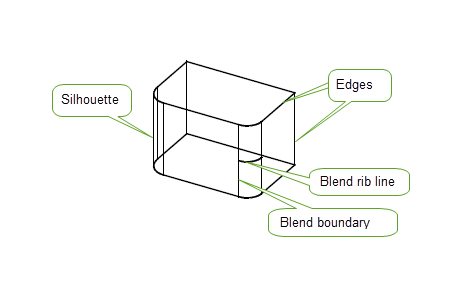

| |
Rendering Functions |
| <<< Introduction To Rendering And Faceting | Chapters | Rendering Option Settings >>> |
Parasolid provides two rendering functions at the PK interface level:
|
This function supports view-independent geometry rendering. See Section 105.2.2. |
|
|
This function supports the following rendering styles:
|
For more information on the options for these functions, see Chapter 106, “Rendering Option Settings”.
The two rendering functions enable you to produce wire-frame and hidden-line pictures (through the GO) of your models (parts). Pictures consist of the following types of line:
See Section 106.3.18, “Hatching” for more information on hatch lines.
The following diagram shows silhouettes, edges, blend boundaries, and blend rib-lines line types. .

The blend on the near edge of this block is in fact unfixed. If the blend had been created using the
draw_fix
blending option then by default, the blend boundary and ribs would not have been drawn, and the unblended edge would.
For further information on the
draw_fix
blending option See “Draw, check, fix” in Chapter 76, “Edge Blending Options”.
PK_GEOM_render generates a 3-D representation of B-curves and B-surfaces, foreign geometry curves and surfaces and their derived offset surfaces.
It allows an application to draw an approximate representation of one or more geometric entities in a “wire mesh” form.
PK_GEOM_render_o_t contains options to let you control whether to:
Geometric entities can be rendered in local coordinates or be subject to selective transformation, using the
geom_transfs
argument.
For more information on PK_GEOM_render options, see Section 106.1, “Introduction”.
PK_TOPOL_render_line generates a 3-D representation of parts, faces and edges.
Topological entities can be rendered in local coordinates or be subject to selective transformation, using the
topol_transfs
argument.
To generate a basic “wire-frame” drawing, PK_TOPOL_render_line is called with the
edge
,
silhouette
, and
viewport
options set to their respective default values.
In addition, PK_TOPOL_render_line_o_t contains options to let you control:
For more information on these options, see Section 106.3, “PK_TOPOL_render_line option settings”.
For an example of this functionality, see the code example in the
C++\Code Examples\Application
Support\Rendering
folder, located in
example_applications
in your Parasolid installation folder.
The basic “wire-frame” drawing described in Section 105.2.3, “View-independent topology” does not include any view-dependent data. For example, rendering a hemispherical body draws the base circle but provides no visual cues about the spherical face.
To generate additional view-dependent data, PK_TOPOL_render_line should be called with the
silhouette
option set, and specifying the current view using a PK_TRANSF_t entity.
The application must apply a copy of the view matrix underlying the PK transform entity to all graphics output data to convert it from GO’s world coordinate system to the application’s view coordinate system before display.
To generate a hidden-line drawing, PK_TOPOL_render_line is called with the
silhouette
and
visibility
options set. The application passes its current view to PK_TOPOL_render_line using a PK transform entity (
PK_TRANSF_t
), in the same way as when rendering view-dependent topology.
The
visibility
option generates additional data which allow hidden portions of lines to be suppressed entirely or be output with a code classifying them as invisible. The default setting of PK_render_vis_no_c is used to generate wire-frame drawings; this causes no visibility conditions to be evaluated, meaning that all lines (whether hidden or visible) will be rendered. For details of the other available settings for the
visibility
option, see Section 106.3.22, “Suppressing hidden lines in bodies in an assembly”.
Figure 105-2 Hidden-line rendering of reflection transforms
Hidden-line drawing also requires a specification of the current view, using a PK transform entity. The application must apply a copy of the underlying view matrix to all graphics output data in the same way as described in Section 105.2.4, “View-dependent topology”. Silhouettes and transitions from visible to invisible only look right in the view specified by the view matrix.
Geometric entities (such as B-curves and B-surfaces) are drawn using PK_GEOM_render.
Topological entities (parts or collections of faces and edges) are drawn using PK_TOPOL_render_line.
If an array of entities is passed to either of these functions it must not contain duplicates, unless an array of transformation entities is also supplied, implying that occurrences of entities are non-coincident.
Each entity in the array of geometric or topological entities is identified by an occurrence number.
This occurrence number is passed onto GO and output as the first element of the
lntp
array in calls to GOOPSG, GOSGMT and GOCLSG. The value is equal to the array index of the originating entity, plus 1, i.e. GO occurrence numbers are output starting at 1. When faces or edges appear in the array of topological entities, a call to GOOPSG is made for the owning body with an occurrence number of zero.
Occurrence numbers allow you to associate entity occurrences with a particular sequences of calls to GO functions arising within a single call to one of the rendering functions. This is useful, for example, when you are outputting faces on an interleaved, rather than body by body, basis, and need to keep track of which face is associated with which body. See “go_interleaved” in Chapter 109, “Faceting Output Via GO”, for more information on outputting interleaved data.
The PK rendering functions can be passed an array of transformation entities, allowing selective transformation of individual geometric or topological entities.
In PK_GEOM_render, this allows curve and surface geometry to be overlaid onto a drawing produced by PK_TOPOL_render_line.
In PK_TOPOL_render_line, this allows generation of the following types of line drawing in wire-frame or hidden-line form:
An array entry of PK_ENTITY_null denotes that a particular entity should not be transformed.
A NULL address implies that no entities should be transformed.
A viewing transformation is needed when PK_TOPOL_render_line is used to generate silhouette and hidden-line data. This is explained in Chapter 111, “Parasolid View Matrices”.
PK_GEOM_render and PK_TOPOL_render_line allow tolerances to be specified, to be used when rendering curves in a part. These approximation tolerances control the accuracy of the polyline representation of the curves.
These tolerances are explained in Chapter 107, “Display Tolerances”.
| <<< Introduction To Rendering And Faceting | Chapters | Rendering Option Settings >>> |